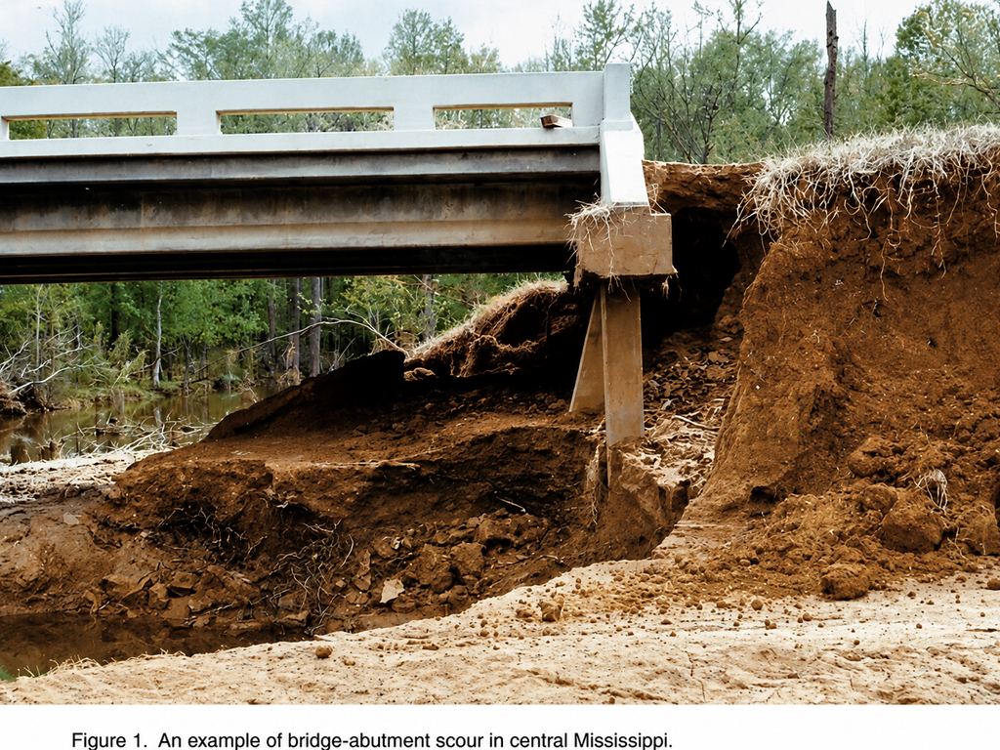
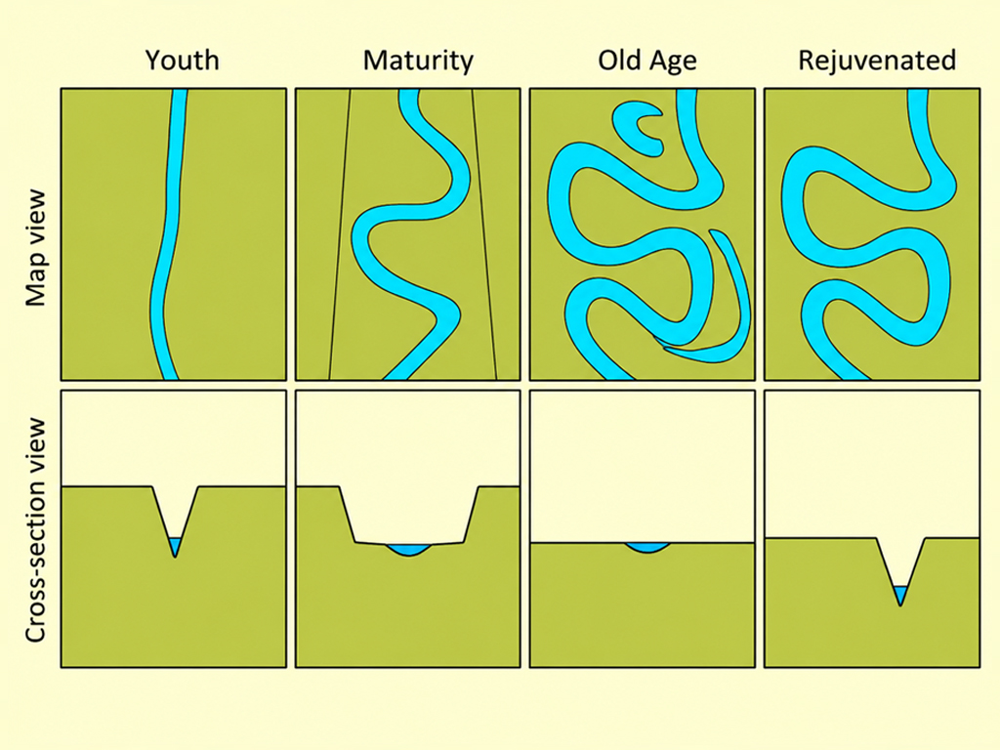
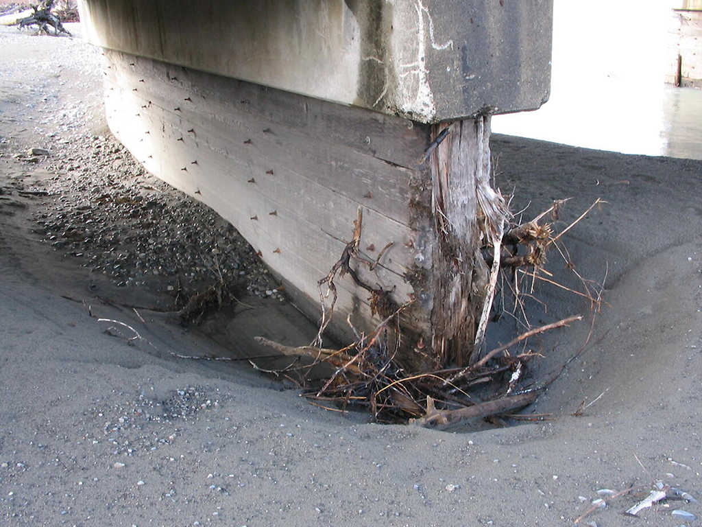
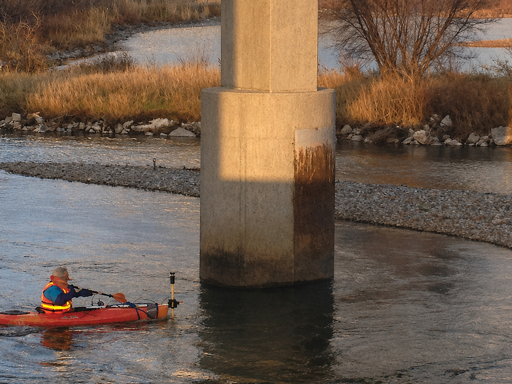
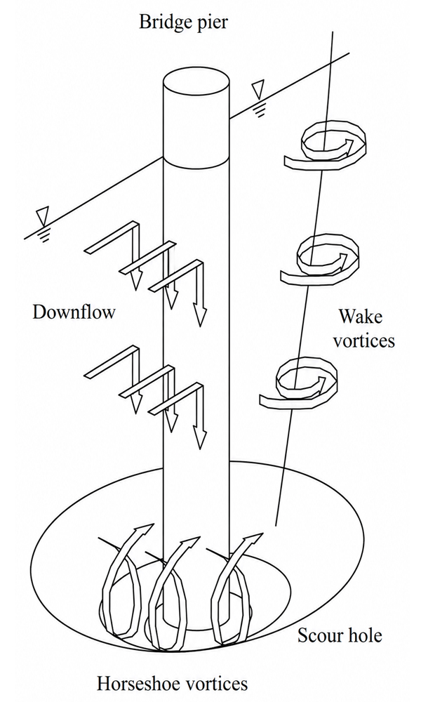
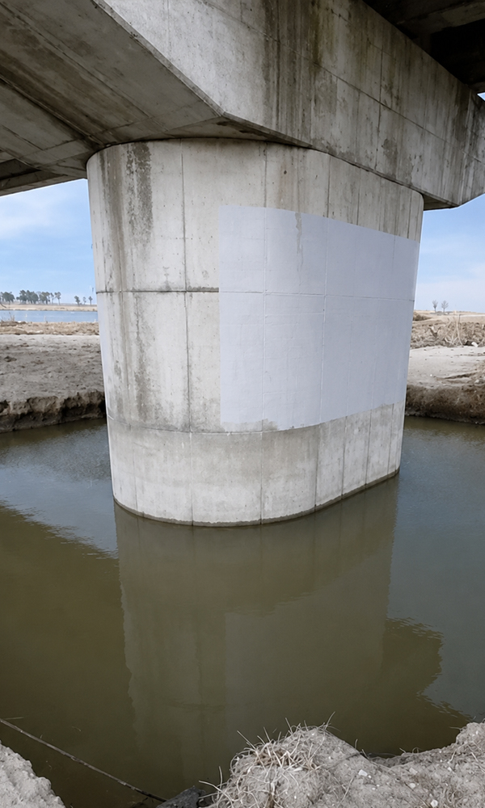
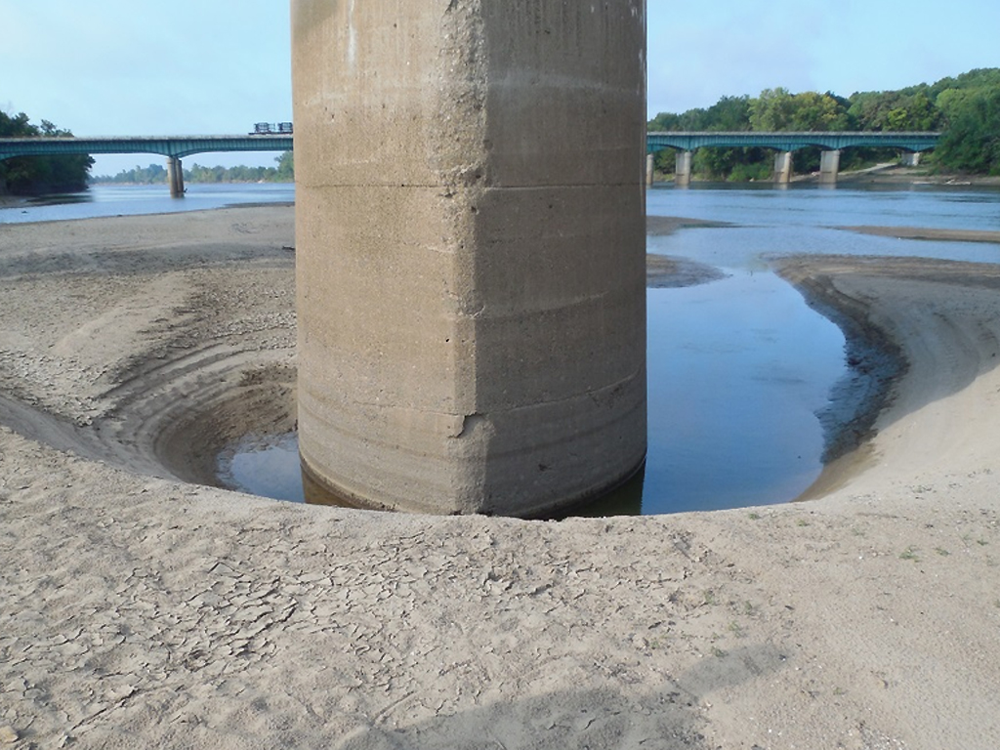

SCOUR
Scour refers to the removal of sediment from around bridge foundations due to flowing water.
Scour is most worrying because there are no signs of structural failure beforehand. One study found scour was responsible for 60% of bridge collapses.
In 2009, a catastrophic bridge failure occurred at Malahide in County Dublin due to scour. The bridge had been inspected only weeks before the incident.

Scour is one of the leading causes of bridge failure worldwide and remains a dominant concern for engineers assessing the long-term resilience of bridge structures.
HOW SCOUR DEVELOPS
When hydraulic forces exceed the natural resistance of the riverbed or embankment material, erosion starts to undermine the supports. This process can be gradual or sudden.
Bridge foundations rely on stable ground to transfer loads safely into the underlying soil or rock. When scour occurs, it reduces the embedment depth of piles, abutments or piers.
As sediment is washed away, the bearing capacity of the soil diminishes and the bridge becomes increasingly vulnerable to settlement, tilting or loss of lateral support.
In extreme cases scour can remove metres of soil in a matter of hours.
GEOMORPHOLOGY OF RIVERS
Geomorphologists seek to understand why landscapes look the way they do. The key point is that rivers constantly change over time. As flow patterns shift, rivers erode their outer banks and deposit sediment on inner bends.
This process alters their depth and width. These ongoing changes mean that the river is never static. This makes planning infrastructure over waterways a careful operation. Scour is commonly classified into three categories: local scour, general scour, and constriction scour.

LOCAL SCOUR
Local scour occurs around individual piers or abutments where turbulence, vortices and flow acceleration create focused erosion:
The horseshoe vortex at the base of a pier is particularly damaging, as it actively excavates material from around the upstream face.

CONSTRICTION SCOUR
Constriction scour develops when the bridge narrows the natural watercourse, the reduction in channel cross-section area increases flow velocity and transporting sediment more aggressively.
CHALLENGES
One of the challenges in predicting scour is the ever-changing nature of river systems. Flow conditions vary seasonally and climate change has intensified the frequency of extreme weather events.

EXTREME FLOWS
These events increase peak flows and raise the likelihood of scour-related incidents. Many historic bridges were designed with limited understanding of hydraulic forces and their foundations may be comparatively shallow or located in materials prone to erosion.
Monitoring scour remains an essential aspect of bridge asset management. Traditional inspection relies on visual assessment during low-flow conditions, but such inspections cannot easily detect how much sediment has been lost beneath the water surface.
Modern approaches include sonar surveys, time-domain reflectometry, buried scour sensors and real-time scour monitoring systems that alert engineers to foundation exposure.
HIDDEN CHANGE
Despite these advancements, scour often progresses unnoticed until a major flood event accelerates erosion at a rate that outpaces inspection intervals or installed instrumentation.
History provides numerous examples of catastrophic bridge collapses attributed to scour.
Many failures share common factors: unexpected high-flow events, inadequate foundation depth, ageing structures and a lack of real-time data on evolving riverbed conditions.
While a bridge may remain stable for decades, a single extreme flood can dramatically alter its foundation environment.
MITIGATION
Mitigation of scour involves a combination of structural measures and ongoing monitoring.
Common protections include riprap placement, gabions and articulated concrete blocks.


STRUCTURAL RESILIENCE
These systems reduce erosion by absorbing energy and stabilising the bed material around the foundation.
Another approach is lowering the risk through structural resilience, such as deeper foundations designed to withstand predicted scour depths plus a safety margin. In some cases, redesigning the waterway to increase conveyance, smooth flow paths, or divert high velocities away from piers can reduce scour potential.
In assessment of older bridges, it is often necessary to assume conservative scour depths when sediment or hydraulic data is incomplete, particularly for masonry arches and early steel girders where foundation details may be unknown.

INSPECTION GUIDELINES
Borrowed from “Monitoring Scour Critical Bridges”
Riprap should be angular and interlocking (Old bowling balls would not make good riprap). Flat sections of broken concrete paving do not make good riprap.
Riprap should have a granular or synthetic geotextile filter between the riprap and the subgrade material.
Riprap should be well graded (a wide range of rock sizes). The maximum rock size should be no greater than about twice the median size.
For bridge piers, riprap should generally extend up to the bed elevation so that the top of the riprap is visible to the inspector during and after floods.